Bubbles の使い方
思いついたことを書いて、泡として漂わせておく todo アプリです。やっていないことを責めない作りにしてあります（達成率・連続日数・ご褒美の演出は出しません）。
1. 画面の見方
海に書く
下の欄に書いて「送信」を押すと、泡になって海に浮かびます。泡は時間とともにゆっくり漂います。左右の矢印の看板（「仕事」など）か背景をなぞると、となりの海（タグごとの海）へ移ります。上は「長期保留」、下は「完了」の海です。
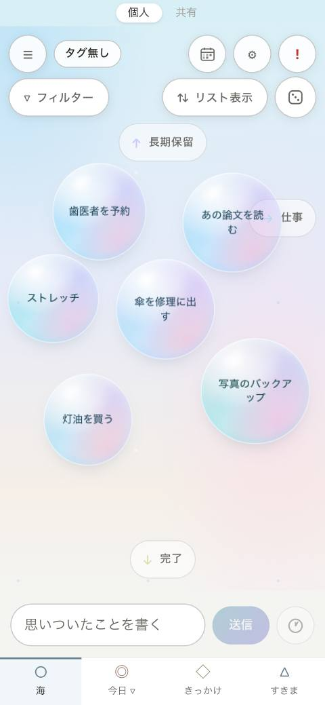
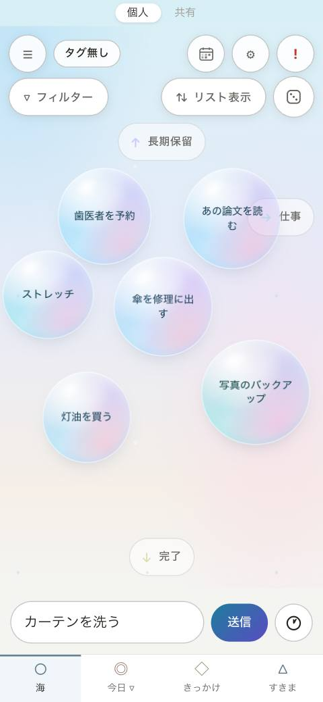
泡をタップする（盤）
泡をタップすると真ん中に来て、下に盤が開きます。名前の書き直し、「今日」「きっかけ」「すきま」などへの付け外し、次の一手、作業メモ、リンクがここにあります。「タスク開始」で5分の集中画面へ。
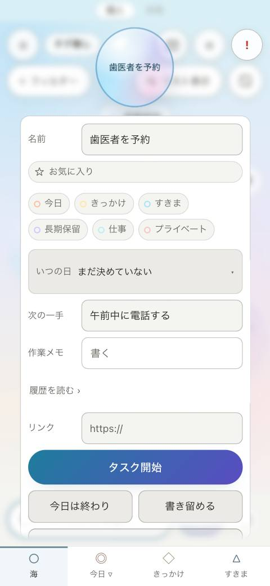
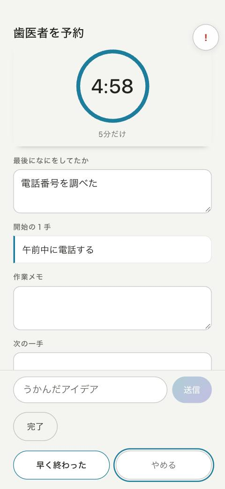
今日・きっかけ・すきま
下のタブで切り替えます。「今日」は今日やると決めたもの、「きっかけ」は「歯を磨いたら」のような行動にぶら下げるもの、「すきま」は「耳だけ空いている」などの状況ごとの枠です。海の泡は、タブへドラッグすると、そこにも置かれます（移動ではなく、増えます）。
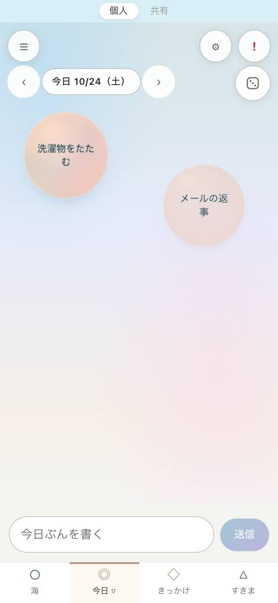
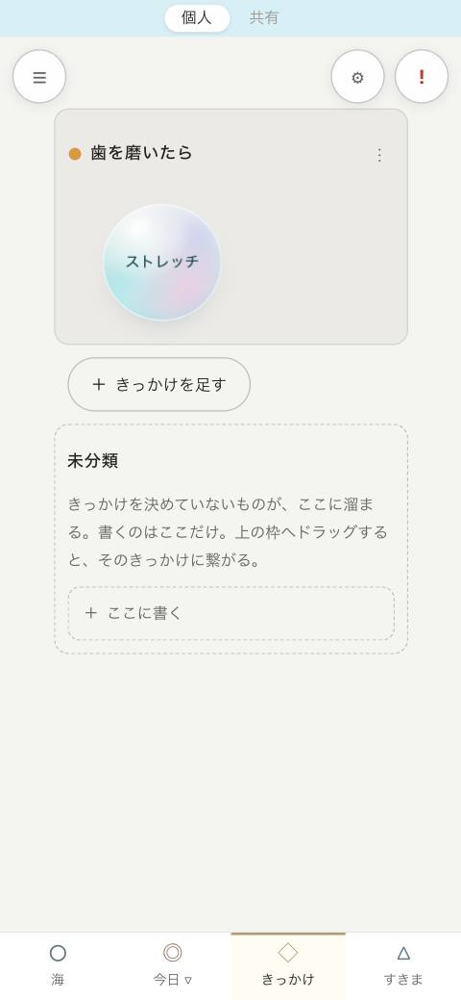
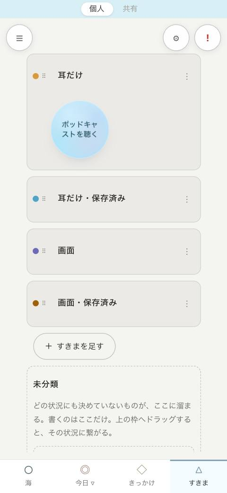
引き出しと設定
左上の ≡ は「引き出し」。いちばん上の「個人／共有」で持ち主を切り替えます。その下の、最近つかったもの・お気に入り・長期保留・タグごとの一覧から、1タップで今日に置けます。右上の ⚙ は設定です。設定のいちばん上に「ふりかえり」と、この「使い方」があります。
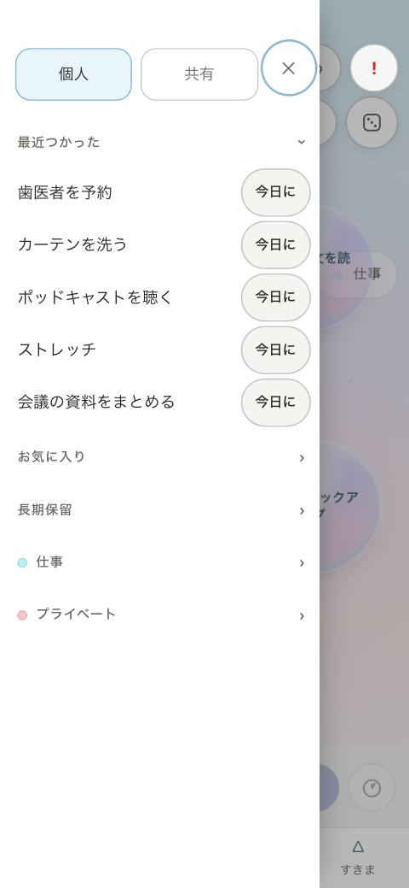
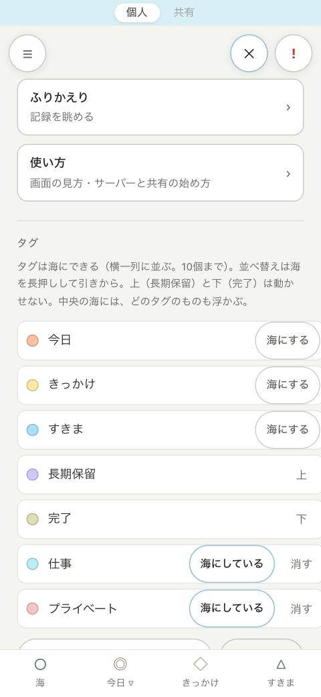
2. 個人と共有
左上の ≡（引き出し）を開くと、いちばん上に「個人」「共有」のボタンがあります。押すと画面を読み直し、app 全体（海・今日・きっかけ・すきま・ふりかえり）がその持ち主の記録になります。今どちらかは、画面のいちばん上の薄い帯に出ます（帯は表示だけで、押しても切り替わりません）。
- 個人：自分だけの記録。端末に書き、サーバーに繋いでいればサーバーとも合わせます。
- 共有：共有の合言葉を知っている人どうしの記録。水が夕方の色になり、薄い帯の右に「合わせた／時刻」と出ます。書けるのは、サーバーと合わせられている間だけです。
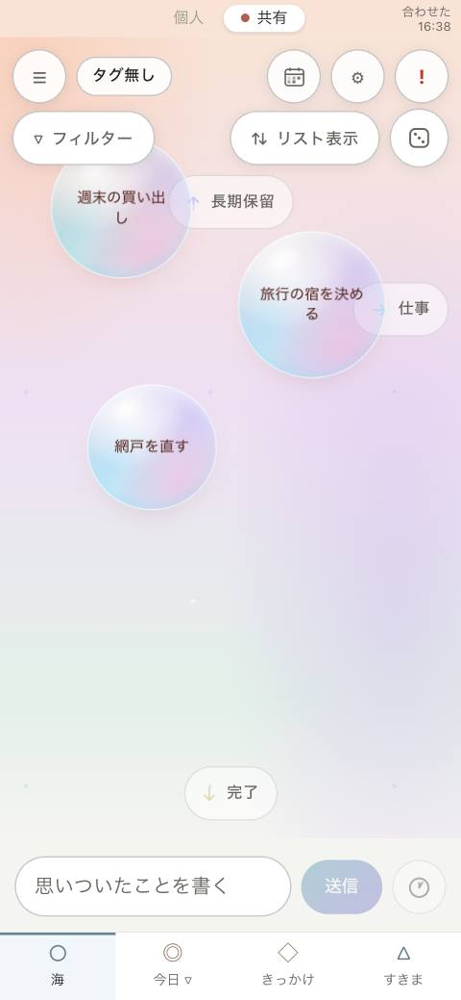
3. サーバーに繋ぐ（自分の端末）
複数の端末で同じ記録を使うには、自分で立てたサーバー（6章）に繋ぎます。サーバーが無くても、今までどおり端末の中だけで使えます。
- 端末に Tailscale を入れて、サーバーと同じアカウントでログインし、「接続」にする（6章）。
- 設定（⚙）を開き、「サーバー」の欄までスクロールする。
- 住所に
https://<機械名>.<tailnet名>.ts.net、「自分の合言葉」にサーバーのtoken.txtの中身を入れる。共有も使うなら「共有の合言葉」も入れる。 - 「繋ぐ」を押す。下の字が「個人: 合わせた（時刻）」になれば繋がっています。
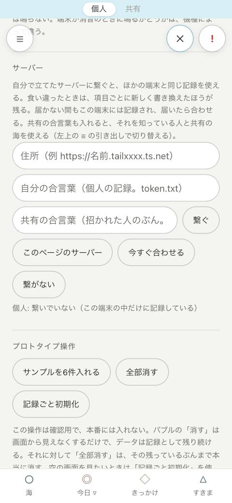
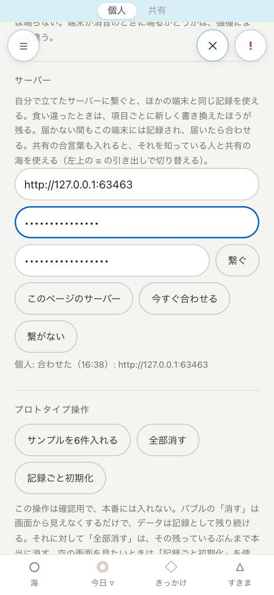
http://127.0.0.1。実際は https://…ts.net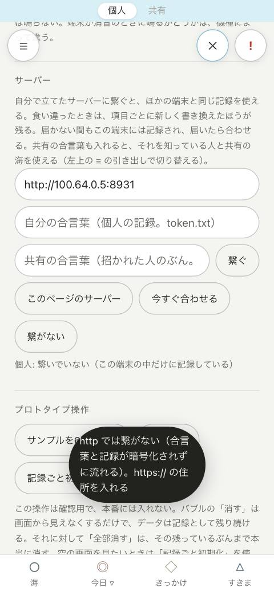
http:// の住所は断ります（合言葉と記録が暗号化されずに流れるため）住所の頭を省くと https:// を補います。http:// で繋げるのは、自分の機械の中（localhost・127.0.0.1）だけです（開発と、Android エミュレーターの adb reverse 用）。
食い違ったときは、項目ごとに新しく書き換えたほうが残ります。消したものも、消した時刻で比べます。サーバーに届かない間も端末には記録され、届いたら合わせます。
4. 共有の海に入る（招かれた人）
持ち主から「住所」と「あなたのぶんの共有の合言葉」を受け取ったら、次のようにします。
- Tailscale のアカウントを作り（個人向けは無料）、端末に Tailscale を入れてログインする。
- 持ち主から届いた「機械の共有」の招待を受け入れる。あなたの Tailscale に、このサーバー機だけが現れます（ほかの機械には届きません）。
- Bubbles で左上の ≡ を開き、いちばん上の「共有」を押す。「共有の海に入る」の札が出るので、「設定を開く」を押す。
- 住所と「共有の合言葉」だけを入れて「繋ぐ」（「自分の合言葉」は空のまま）。「共有: 合わせた」になれば入れています。
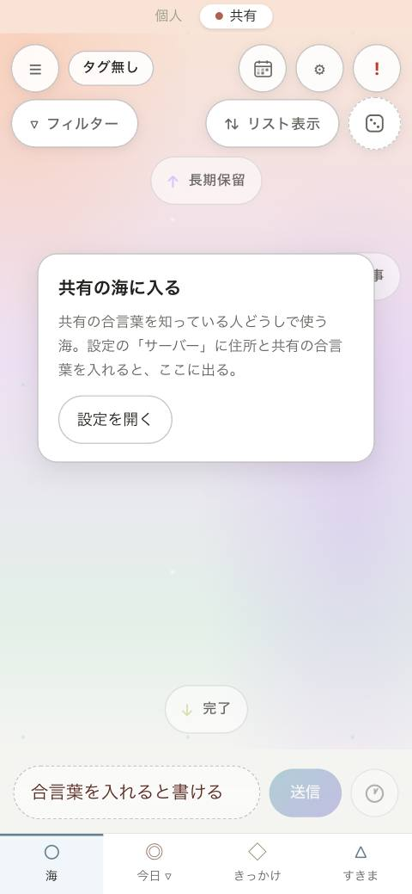
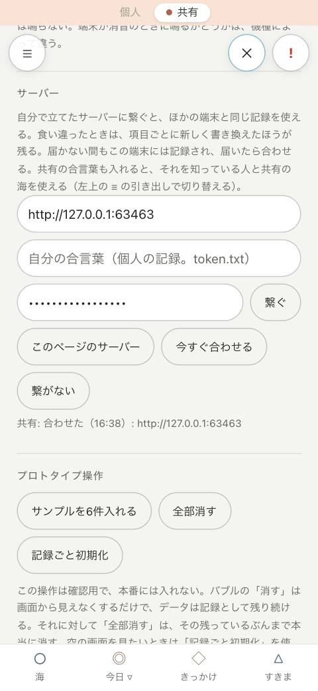
5. 繋がっていないとき
共有の海は、サーバーと合わせられていない間は「読むだけ」になります。最後に見たものを色を抜いて出し、薄い帯の右に「繋がっていない／時刻 に見たもの」と出ます。入力欄は点線になり、書こうとすると「繋がると書ける」と知らせます。繋がったら自動で新しくなり、色も戻ります。
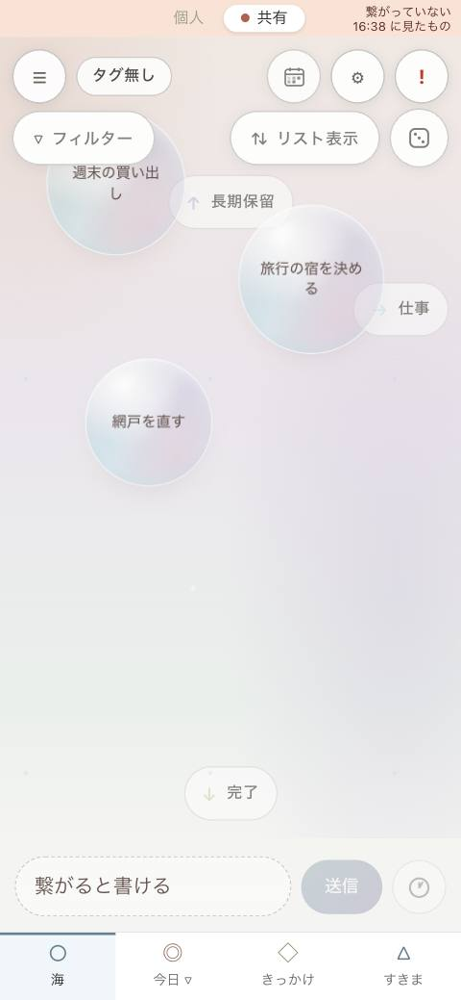
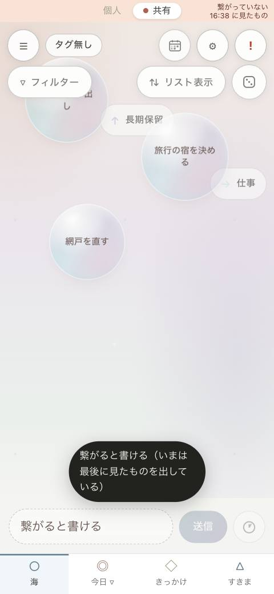
個人の海は、繋がっていなくても見た目は変わらず、今までどおり書けます（届いたら合わせます）。
6. サーバーを立てる（持ち主）
Linux のサーバー（Oracle Cloud の無料枠など）に立てます。サーバーは自分の機械の中（127.0.0.1）だけで待ち受け、外からは Tailscale を通った端末だけが届きます。クラウドのファイアウォールは開けません。
6-1. サーバーで立ち上げる
- サーバーに ssh で入り、Tailscale を入れてログインする（
BUBBLES_INSTALL_TAILSCALE=1を付けると、次の手順の中で公式の手順で入れます）。 - 次を実行する。2回目からは同じコマンドが「更新」として働きます。
git clone https://github.com/RH-REP/bubbles-todo.git BUBBLES_TAILSCALE_SSH=1 bash bubbles-todo/tools/server-setup.sh - 最後に出る「繋ぐ住所」と「合言葉」の場所を控える。自分の合言葉は
cat ~/bubbles-data/token.txtで見られます。
スクリプトがすること：python3 と git の確認 → コードの取り込み → 記録の置き場（~/bubbles-data）づくり → テスト → systemd で常駐（落ちたら起動し直す。書けるのは記録の置き場だけ）→ tailscale serve で HTTPS 化 → 住所と合言葉の場所を出す。
| 操作 | コマンド |
|---|---|
| 動いているか・住所 | bash bubbles-todo/tools/server-setup.sh status |
| コードを取り込んで起動し直す | bash bubbles-todo/tools/server-setup.sh update |
| 常駐をやめる（記録は残す） | bash bubbles-todo/tools/server-setup.sh uninstall |
| サーバーの記録（ログ） | sudo journalctl -u bubbles-todo |
6-2. Tailscale の管理画面ですること（最初の1回）
- HTTPS を有効にする：管理画面の DNS で MagicDNS と HTTPS 証明書を有効にする（
tailscale serveに要る）。機械名と tailnet 名は証明書の公開ログに載るので、機械名に個人の情報を入れない。 - 人を招くときは、機械を「共有」する：管理画面の Machines でサーバー機の「…」→「Share」から招待のリンクを作り、相手に送る。tailnet そのものには招かない（相手から届くのは、このサーバー機だけになる）。
- 届くポートを 443 だけにする：アクセスの規則（Access controls）に、共有された人の宛先を絞る規則を書く。例（サーバー機の住所
100.x.y.zは管理画面で確かめる）：
規則を書き換えると、既定の「全部通す」が置き換わります。自分の端末の規則も一緒に書いてください（保存するときに構文の確かめが走ります）。{ "grants": [ // 自分の端末は今までどおり { "src": ["autogroup:member"], "dst": ["*"], "ip": ["*"] }, // 共有された人は、サーバー機の HTTPS（443）だけ { "src": ["autogroup:shared"], "dst": ["100.x.y.z"], "ip": ["tcp:443"] } ] } - ssh を Tailscale に寄せる：
BUBBLES_TAILSCALE_SSH=1で立ち上げると Tailscale SSH が有効になります。tailnet から ssh で入れることを確かめてから、クラウドのファイアウォール（Oracle の Security List）の 22 番を閉じます。 - Funnel（インターネットへの公開）は使わない。
7. 合言葉の管理（招く・取り消す）
共有の合言葉は人ごとに1つ作ります。1人ぶんだけ取り消せます。どれもサーバーを止めずに、次の接続から効きます。
# 招く人のぶんを作る（値はこのときだけ出る。相手には住所とこの値だけを渡す）
bash bubbles-todo/tools/server-setup.sh share-add 母のスマホ
# 一覧（名前・作った日・末尾4文字。値そのものは出さない）
bash bubbles-todo/tools/server-setup.sh share-list
# 取り消す（その端末は次の接続から入れない）
bash bubbles-todo/tools/server-setup.sh share-remove 母のスマホ
# 自分の合言葉を作り直す（自分の端末すべてで入れ直す）
bash bubbles-todo/tools/server-setup.sh rotate-metoken.txt）は人に渡さないでください。個人の記録が読めてしまいます。共有の合言葉だけを知る人は、個人の記録を読めません。8. 安全のための決まり
- サーバーには、Tailscale を通った端末だけが届く（インターネットには出さない）。
- 端末は
https://でだけ繋ぐ（外へのhttp://は断る）。 - 合言葉は人ごと。取り消しは1人ずつ、すぐ効く。
- サーバーは、合言葉の値をログに書かない（端末で起動したときだけ、作った直後に画面に出す）。
- 合言葉を取り違えて入れても（共有の合言葉を自分の欄に入れるなど）、サーバーが返す置き場の名前で端末が気づき、記録を送らない。
- 記録の控えは、サーバーの
~/bubbles-data/backup/（個人）とshare/backup/（共有）に、書くたびに新しいほうから50個残る。
9. 困ったとき
| こうなった | こうする |
|---|---|
| 「届かない: サーバーに届かない」 | 端末の Tailscale が「接続」になっているか。サーバーで server-setup.sh status。 |
| 「合言葉が違う」 | 合言葉を入れ直す。取り消された（share-remove）か、作り直された（rotate-me）かもしれない。 |
| 「これは共有の合言葉ではない」「これは共有の合言葉（自分の合言葉の欄に入っている）」 | 欄を取り違えている。自分の合言葉と共有の合言葉を入れ替える。 |
| 「http では繋がない」 | 住所を https://…ts.net にする。 |
| 共有で書けない（点線） | サーバーと合わせられるまで読むだけ。いちばん上の薄い帯の右の字が「合わせた」になれば書ける。 |
| ほかの VPN が切れた（スマホ） | スマホは VPN を1つしか同時に使えない。Bubbles を使う間だけ Tailscale に切り替える。 |
この記事のスクリーンショットは、試し用の記録で撮ったものです。